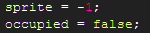
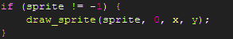

Tutorial
Page 4 of 7
Scripts : Getting Started
We are now going to code the scripts used for our Tic-Tac-Toe game as mentioned in the last section of this tutorial. We'll start with the
scripts that are concerned with the infrastructure of the game first, then move onto handling the player's interactions and the behaviour
of the computer AI.
First we're going to add several groups to the Scripts hierarchy. These allow us to collect together the scripts used by a given object
into a common, partitioned location.
To create a group, right click on Scripts and select Create Group. Then rename the
newly created group to BoardCell. This group will contain the scripts used by the object objBoardCell. Now create groups
for the remaining objects: GameBoard, BoardLayout and GameDifficulty (note that by convention the names of the groups is the
same as the objects with the obj prepend removed).
Next we will create the scripts for objBoardCell. Right click on the BoardCell group and select Create Script.
Rename the new script to scrBoardCellInit. Select the script and add the following code:

This script creates two variables for a board cell instance, the sprite used for the board cell (a nought or cross) and whether
or not the cell is occupied. Theoretically we could just test the value of the board's cell sprite to see if it's occupied or
not but for now we'll stick to using the boolean variable for this purpose.
Now add the scrBoardCellDraw script and add the following code:

Click on the Next button to go to the next page of the tutorial.